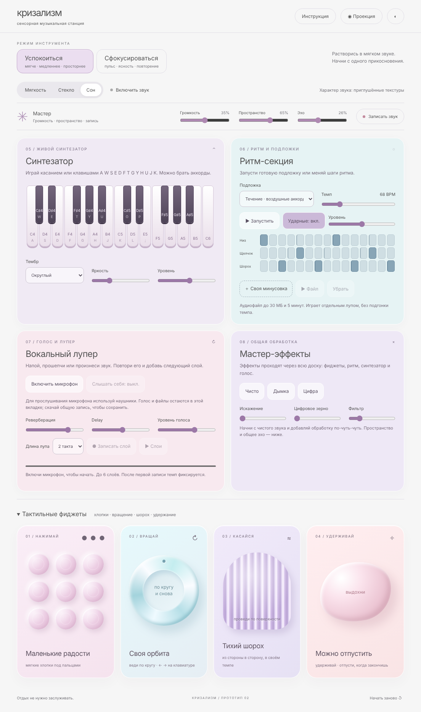
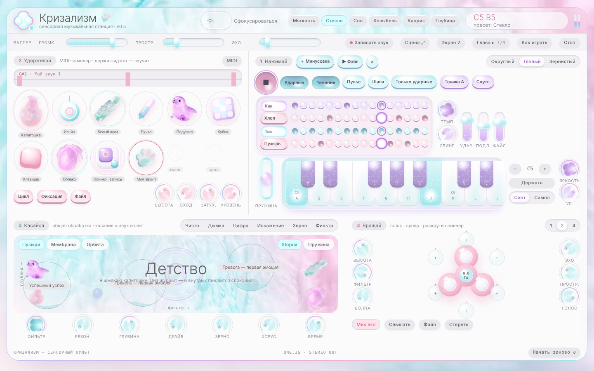

кризализмзвуковая фиджет-доска · браузерный синтезатор
Нажимай, вращай, касайся, удерживай.
Каждый фиджет — звук и пауза.
ВЕРСИИ ПРОЕКТА

ПРОТОТИП 02 · WEB AUDIO
Сенсорная музыкальная станция
Синтезатор на 25 клавиш, ритм-секция на 16 шагов с подложками, вокальный лупер до 6 слоёв, мастер-эффекты и четыре тактильных фиджета. Окно «Проекция» для проектора: каждое действие оставляет визуальный след.
Открыть →
ВЕРСИЯ 0.5 · TONE.JS
Kawaii-плагин из фиджетов
Четыре инструмента-жеста: пупырки ритма и клавиатура-брелок, MIDI-сэмплер из фиджетов Figma с кликером записи, сцена-касание с обработкой и спиннер-лупер голоса. Перформанс по главам истории и виджеинг на второй экран.
Открыть →